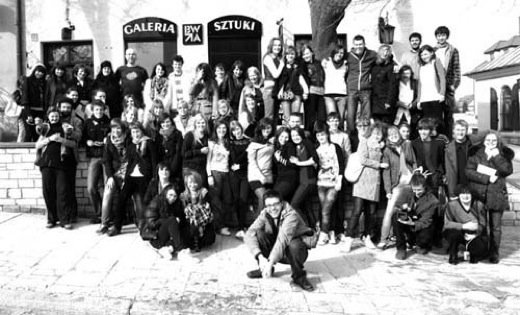
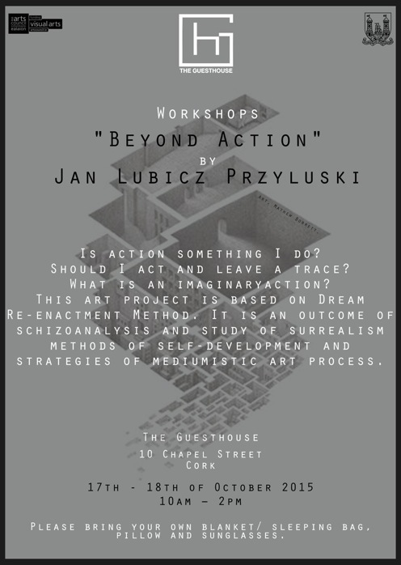
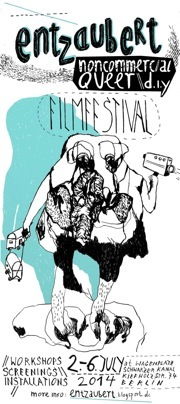

...


"Beyond Action"
by Jan Lubicz Przyluski (JLP)
Project
Is action something I do? Should I act and leave a trace? What is an imaginary action?
This art project is based on Dream Re-enactment Method discovered by Jan in 2013. It is an outcome of schizoanalysis and study of surrealism methods of self-development and strategies of mediumistic art process. Jan is examining these avant-garde approach in contemporary neoliberal, control obsessed politics of art and society.
The material for the exchange among participants is most of all the experiences of dreams and memories of holotropic states (Greek for: moving towards wholeness) or everything that seems to participants to be like: such as repeating deja-vu, psychedelic experience, mystic vision, precognition. All these para-scientific, psychotronic phenomena will be treated as a footage for re-enactment, performed behaviour will be documented. Documentation of dream re-enactment will be treated, analysed and discussed as if it was performance art documentation, in the context of art.
The work is concerned with local possibilities, mind set and needs, and that is why it will be community-specific (rather then site-specific or performative sensu stricte). Sessions will be held in group of 5-9 persons (no necessarily artists or working in cultural field).
The artist asks to treat this para-scientific involvement as an interdisciplinary art project, concerned with relational aesthetics, postproduction, contextual art in the era of cognitive research, brain mapping, use of meditation techniques in art, and other phenomena which go beyond actual paradigm.
Week 1: Research and Community specific preparations
Weeks 2 and 3: Workshop sessions
Week 4: Performance and documentation work
Author
Jan Lubicz is an artist working on border of art, scientific discourse (numerous essays on anthropology, his book "The Art of Action" awarded Poland's Ministry of Culture Award), cultural animation (work on contextual art network development) and film. JLP directed documentaries about performance art, edited experimental films (i.e. "Glass Trap", Nominated for European Film Award), worked as schizoanalyst and consultant to artists and art institutions. In Bellmer Society, a community working with transgressive, surrealist and ecstatic art, Lubicz Przyluski was a member of board, treasurer, lecturer and performer. Jan is also a founder and director of The Art of Action Archives.
He just published his new work "Warpechowski. The Way of The Performer" (September 2014) in the National Gallery, Warsaw, video archive disc about Poland's first performance artist.

copyright by Jan Lubicz Przyluski - All Rights Reserved
Warsztaty antropologiczne, Sandomierz 2010

THE POLYAMOROUS EXPERIENCE: FILM SCRIPT WRITING WORKSHOP
The Polyamorous Experience: Film Script Writing Workshop
3 day workshop à 3 hours:
thursday 3. July
friday 4. July
saturday 5. July
12 – 15:00
Studio space, Karpfenteichstrasse
*workshop will be in english language*
Limited participants. Please register by sending an email to:
piret.karro@gmail.com
Workshop facilitators: Piret Karro and Jan Lubicz Przyłuski
During the 3-day workshop, we’ll be exploring the phenomenon of polyamory through the means of film script writing. We’ll be looking into the many folds of polyamory by working with phases of film script development through a 3-hour session each day. Anyone can join, regardless of having any experience with polyamory or writing a film script.
Day 1: The concept of polyamory
We’ll be discussing Polyamory as a personal experience that asks the subject to let go of conservative moral principles and adjust to a more dynamic and complex system of personal relationships. The possible topics to explore are unconventional love, religious taboos, different sexualities, letting go of ownership and jealousy, partnership, loneliness, revolting the system, the representation of polyamory in a monogamy-dominated culture.
Day 2: Narrative
The subthemes of polyamory are explored through techniques of writing a film script. A polyamorous love story can function as a model for developing non-linear narrative structure, analysing different possibilities of story-telling while depicting different relationships within one polyamorous group of people in the story. The narratives can be created by deconstructing existing narrative models and re-creating them in the queer context or by creating a story from scratch, using personal experience as inspiration.
Day 3: Characters
In the last session, we’ll develop characters for our story, mixing fantasies with actual experiences. We’ll work on completing the script by creating concrete personas and setting them in certain situations. This will give us a chance to study the metamorphosis of one’s identity through the development of the story and try out the mechanisms of enclosing polyamorous experience into a character. On the last day, we’ll focus on the technical details of script writing: creating dialogue, space description, camera perspective, non-verbal actions.
The workshop held by:
Jan Lubicz Przyłuski. Experimental film director, anthropologist and intermedia artist. Educated in the fields of performance art, theater anthropology. Jan is an author of several documentaries about art,
editor and co-director of many other film forms. Worked with many important figures of contemporary culture, such as: Jan Swidzinski, the creator of contextual art, world renowned theater director Krystian Lupa, as well as with Andrzej Urbanowicz in Bellmer Society or Adina Bar-On, pioneer of live art in Israel. Lives and works in Warsaw.
Piret Karro. Semiotician, cultural organizer and performance artist. Has written a thesis on Gender Fluidity in Semiotics and Cultural Theory. In performance art, Piret is mostly interested in human interaction, endurance, and situation dynamics. Has organized several seminar series, an international art symposium, an animation film festival, miscellaneous performances. Occasionally publishes art criticism. Has years of experience in autoetnography on polyamory. Piret is based in Tartu, Estonia.
------------------------------------------------------------------------
------------------------------------------------------------------------
Warsztaty >> (wybrane)
Beyond Action (2015)
The Polyamorous Experience: Film Script Writing Workshop (2014)
Warsztat Antropologiczny (2010)